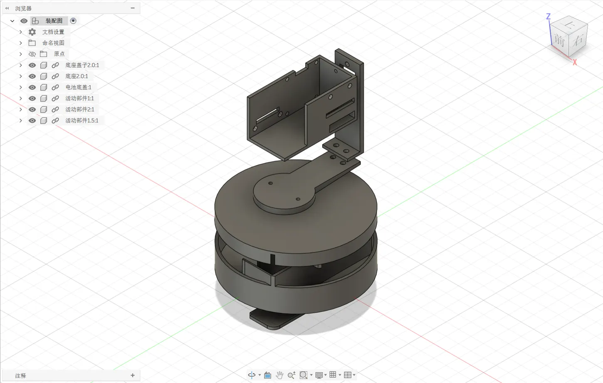
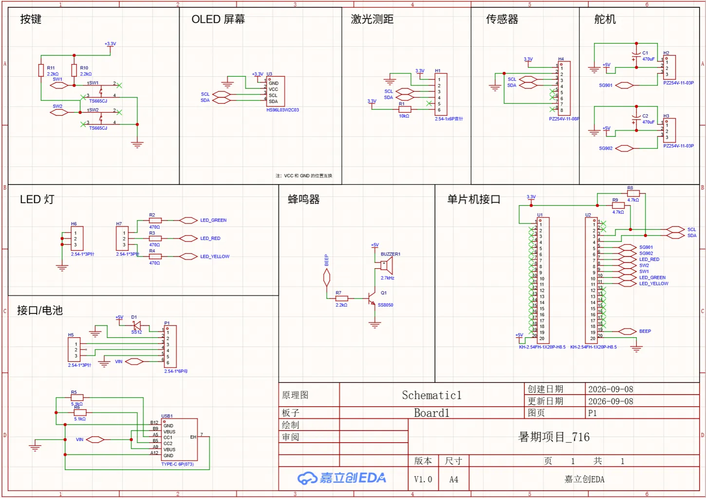

返回硬件项目索引
返回硬件项目索引桌面坐姿检测器
阅读项目文档 ↓这是一款能够检测并追踪面部位置的桌面坐姿检测装置。当使用者坐在装置前，摄像头会寻找面部位置，云台随之转动，帮助观察和判断当前坐姿。
装置由底座、云台和摄像头三部分构成，摄像头跟随云台调整方向，即使面部偏离正前方，也能尝试继续追踪。云台上固定了一块 OLED 屏幕，使用者可以通过按键切换显示内容，查看面部坐标或摄像头捕捉到的画面。
除了屏幕上的信息，装置还通过外置 LED 灯和蜂鸣器提供坐姿反馈，让提醒出现在日常学习与工作的桌面环境中。项目展示了传感器、支架结构与电路之间的配合方式。




项目文档
项目介绍
项目介绍
项目概况
项目名称：桌面姿态提醒器
mentor：徐莘宁
项目简介
一款放置在桌面的装置，包含一个放置电池的底座和一个二轴云台，可以实时检测面部与桌面的距离来判断坐姿是否端正，并通过OLED屏幕显示当前坐姿是否健康，并给出提醒。
OLED屏幕会一直显示如下信息：摄像头朝向，是否检测到人脸，脸部距离桌面高度。
---
9.12
新增了通过按键切换 OLED 屏幕显示内容的功能，按下按键并松开，会显示摄像头实时捕捉的画面，再按下按键切换回原来的显示模式。
---
项目成长
机械结构
装置的整体机械结构如下图所示。
在装置底部预留了可以放置锂电池的位置。而控制云台的两台电机将分别安装在底座的中部和摄像头的侧边。摄像头、OLED屏幕、加速度传感器、激光测距元件均放置在云台顶部的长方形小舱。
电路原理图
电路图在7月16日完成绘制，但是由于疏忽，直到9月8日调试时才发现按键未添加上拉电阻。上图为添加上拉电阻后的电路原理图。在实际的焊接过程中， LED 灯、电池暂未焊接。
项目使用 ESP32-S3-CAM 单片机，包含40个针脚，且自带24p的FPC接口，可连接摄像头。单片机通过 I2C 连接了 OLED 屏幕、激光测距装置、加速度传感器和舵机。单片机会通过摄像头采集到的图像，检测人脸当前位置，根据人脸在画面中的位置，控制舵机旋转，将人脸调整至画面中央后，启动激光测距装置测量，获取人脸到装置距离后，再将其换算成人脸到桌面的距离，从而判断坐姿是否健康。
为了避免舵机因为单片机运行人脸检测模型时大量耗电而发生异常抖动，舵机的正负极接入了 470μF 的电容，用于缓冲。
按键、LED 灯和蜂鸣器直接连接在单片机附近。按键设置两个，负责摄像头开关和切换 OLED 显示模式。但是由于按键未添加上拉电阻，对应功能未实现。LED 设置三个，分别负责提醒当前装置是否正常运行、人脸检测是否成功、坐姿是否健康。蜂鸣器会在检测到坐姿不健康时响起。
嵌入式代码
代码全部由 AI 生成，我只理解了其中一小部分的含义。代码功能的解释是由 AI 提供的。
重要的库
- <Arduino.h>：提供setup()、loop()等基础函数
- <wire.h>：实现 I2C 通讯
- <Adafruit_GFX.h>：提供绘图的函数
- <Adafruit_SSD1306.h>：驱动 SSD1306 OLED 屏幕，和上一个库结合使用，实现在 OLED 屏幕上显示图像。
- <Adafruit_VL53L0X.h>：驱动 VL53L0X
- <Servo.h>：驱动舵机，通过 PWM 信号驱动标准舵机。驱动连续旋转舵机时需要对信号值进行换算
- <eloquent_esp32cam.h>：提供 ESP32摄像头和人脸检测的封装函数，实现获取图片和运行模型的功能。
- <eloquent_esp32cam/face/detection.h>：提供一个两级的人脸检测神经网络
主要的自定义函数
- waitMs(uint32_t ms)：使用millis()实现等待ms毫秒，从而避开使用delay()
- pollSpeedTune()：允许直接通过串口更改舵机转速值，便于调试。
- calibrateLevelBaseline()：收集20次 MPU6050 采集到的数据，并据此返回基准值。该值会作为水平基准。因此，装置在启动时必须保证云台水平放置。
- renderPreviewToOled()：将输入人脸检测模型的图片压缩为 OLED 屏幕的128x64的尺寸，这是为了便于在 OLED 屏幕上呈现出输入到人脸检测模型内的画面，在当前代码中未调用，未来会在实现按键功能当中使用到。
- mpu_init_bare()：唤醒 MPU6050 ，并返回一个bool值判断是否唤醒。没有使用 Adafruit 库，是为了避免与其他库发生冲突（AI 的解释）。
- mpu_read_accel(float *ax, float*ay,float *az)：读取 MPU6050 采集到的三轴加速度，并换算为比力。
代码工作流程
- setup()阶段
等待2秒，待电源与串口稳定后，建立 I2C 连接，确认所有元件应答并初始化，同时使用calibrateLevelBaseline()完成水平校准。之所以要校准，是因为 MPU6050 的固定不牢，每次重新上电后位置会发生一定移动。
- loop()阶段
按照 启动测距 -> 启动人脸检测 -> 控制舵机旋转 -> 读取 MPU6050 数据 -> 计算高度 -> OLED屏幕刷新 的次序循环工作。
调试与迭代过程
模型打印与拼装
该项目 3D 模型的制作和电路板绘制是同时进行的，电路板先绘制完成，随后完成模型的建模。
第一次 3D 打印时，因为我估错了各元件的尺寸大小，且未考虑到杜邦线的安置，装置没有一个地方可以正常安装，因此我调整了模型的尺寸后重新打印，并得到了一个可拼装的版本。之后我就没再对 3D 建模作任何改动。后续等待电路板到货并焊接完成。之后我让 AI 生成了嵌入式代码，但未开始调试。
随后我下单 FPC 软排线、螺丝等元件，并等待到货后完成整个装置的拼装，此时我发现装置未预留摄像头的放置位置，因此我选择用双面胶固定摄像头位置。
电路和嵌入式代码
发现问题
嵌入式代码我全部交给 AI 生成，使用了 Vscode 的 PlatformIO 向单片机拷入程序并调试。一开始为了使用 ESP32 官方的人脸检测模型，使用了 ESP-IDF 框架。调试发现两个主要问题：舵机无法正常旋转，且单片机始终检测不到人脸。我把问题以及串口的反馈提交给 AI 继续修改，多次修改后，第二个问题改善，但第一个问题始终无法解决。
我认为舵机无法正常旋转是因为供电不足，我购买的舵机支持4.8-6V的工作电压。但多次测量后发现舵机的电源线和地线间始终是5V左右，供电正常。AI 认为是因为舵机的供电线偶尔会因为单片机运行人脸检测模型耗电而被干扰，需要对舵机独立供电，因此我重新绘制了一块电路板，将电源线分为了主电源线和舵机电源线并使用两个 Type-C 口供电，每个供电口串联一个锂电池升压模块为后续的锂电池供电作准备。但是焊接完成后发现舵机电源线的升压模块似乎有问题，我也没有多的升压模块，改用旧电路板进行调试。
解决问题
为了解决舵机问题，我尝试阅读对应的代码，发现 AI 将舵机理解为了180°舵机，PWM信号与旋转角度对应。实际上我购买的舵机是连续旋转舵机，PWM信号与转速和旋转方向有关，因此我让 AI 进行修改，修改后发现舵机可以正常旋转。
第二个问题，即始终检测不到人脸，我直觉上认为是代码问题。我让 AI 不断修改，但总是无法稳定检测人脸，并且在这个过程中，我意外发现激光测距元件无法正常读取数值，且多次修改代码后无法解决该问题。
我不知道接下去该干什么，AI 生成的代码我基本看不明白。所以我让 AI 先换框架，将原代码全部改为 Arduino 框架下的代码。最新的人脸检测模型不支持 Arduino 框架，改用一个叫 Eloquent 的模型。
修改框架后，激光测距元件意外可以正常使用，但是依然无法正常检测人脸。这时我重新烧录 IDF 框架下的代码，仍然无法检测人脸，激光测距元件无法使用；我再烧录 Arduino 框架下的代码，发现激光测距元件又无法使用了。
至此，我认为电路本身可能存在一定问题，也许是某条线路接触不良等，导致相同代码的运行结果不一样。于是，我重新焊接了原电路板，但问题依然没有得到改善。
转机发生在一次我偶然拿下眼镜（我有近视），发现舵机会发生转动。我突然有了一个猜测：会不会是因为我带着眼镜，导致摄像头捕捉到的人脸很不清楚。于是我让 AI 编写了一段实时提取输入人脸检测模型的画面的代码，并将画面呈现在 OLED 屏幕上。
由此我发现两件事情：第一是环境亮度太低会让摄像头一片漆黑；第二是摄像头捕捉到的画面大小非常有限，因此当舵机转动的时候，下一次人脸检测还未启动，舵机就已经转过头了。
至此，问题就变得不太可以立刻解决了。
首先是环境亮度的问题。我计划为装置增加一个柔和的发光条带，这样应该可以一定程度上提高亮度。
而舵机转过头的问题，因为连续旋转舵机有死区，转动速度有一个最小值，在最小值下，舵机仍然会转动过头，而解决方案我想到两个：一是购买焦距更小的摄像头，但是这样可能导致远处的人脸检测很困难；二是换用其他电机，比如旋转角度舵机或者步进电机，这样可以解决转过头的问题。但是这些方案都需要购置新零件，一时半会儿完成不了。
这时 AI 提出了一种看法：它说可以在代码上实现让舵机“一顿一顿”地旋转，从而变相降低舵机的平均旋转速度。我让它按照它的想法编写程序，发现可以运行，效果聊胜无。
随后，我让 AI 设计完成推算人脸到桌面距离的代码。整个项目的开发与调试到此结束。
现存问题
除了上一个小节提到的舵机旋转过头的问题外，该装置还存在以下问题：一是由于装置重量不均以及被杜邦线拉扯的原因，舵机的旋转结构存在弯折，导致摄像头倾斜。二是由于云台上未设计摄像头的放置位置，目前摄像头十分容易脱落。三是电池和 LED 灯均未完成焊接。四是按键因为新板子还没到货，仍然处于有问题的状态。五是电路板、杜邦线等完全裸露在外。
---
9.12
为按键添加了上拉电阻的电路板到货了。测量电压后，发现按键的3.3V网络和电路板的3.3V网络竟然是断开的，原因是在设计电路原理图的时候，前者命名为了“+3.3V”，后者命名为了“3.3V”，其中“+3.3V”网络还连接了 OLED 屏幕，因此按键功能依然无法正常使用，该网络上电压测量值约为1.6V。但是 OLED 屏幕可以运行。
由于在设计原理图的过程当中，我回滚过版本，导致原本连接在某引脚上的 LED 移动到了另一个与 PSRAM 冲突的引脚，导致 LED 灯无法正常点亮。之前发生过单片机无故重启的情况，很有可能就是 LED 导致的。
电路原理图已经更改完成。我目前的计划是，先为旧电路板的“+3.3V”和“3.3V”飞线。LED 灯暂时去除，只保留接线正确的 LED 灯，等以后下单新的电路板。
---
9.13
舵机到货了。还未替换，已经完成了旧电路板的飞线。
---
AI 使用说明
AI 在电路和嵌入式代码上为我提供了大量帮助。
电路方面：
旧电路板的设计过程中，AI 帮我完成了如下任务：
- 帮我挑选元件型号。单片机 ESP32-S3-CAM 、锂电池升压模块 IP5306-CK、加速度传感器 MPU6050 和摄像头 ov2640 都是由 AI 帮我确认型号。
- 帮我挑选被动元件。激光测距元件的 10kΩ 上拉电阻、舵机的 470μF 滤波电容和二极管 SS12 由 AI 提醒我添加。
- 校验电路原理图。在调试嵌入式代码期间，我让 AI 帮我确认电路原理图是否存在问题，AI 检查后认为原理图不存在问题。
新电路板的设计过程中，AI 的工作与之类似，但最终我没有采用新电路板。
嵌入式代码方面：
- 完成全部的代码设计和修改。我只完成了编译和烧录。最终采用的是 Arduino 框架下的代码。
- 负责了部分的调试。有些时候我会让 AI 直接监听串口，并根据串口的输出来改进代码。
- 写了一份详细的介绍该项目代码的文件，供我阅读学习。